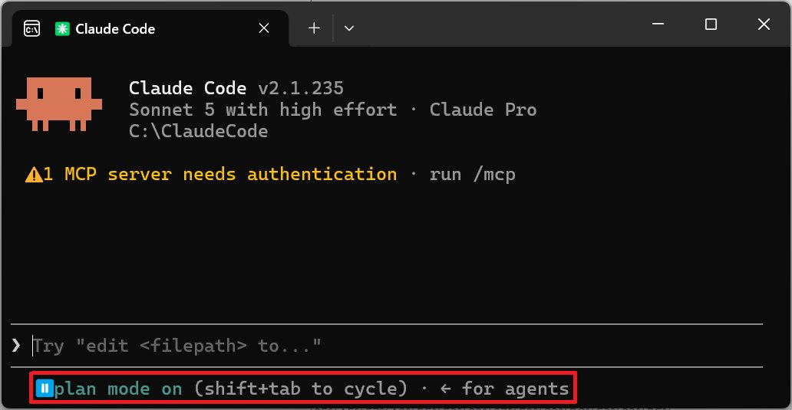
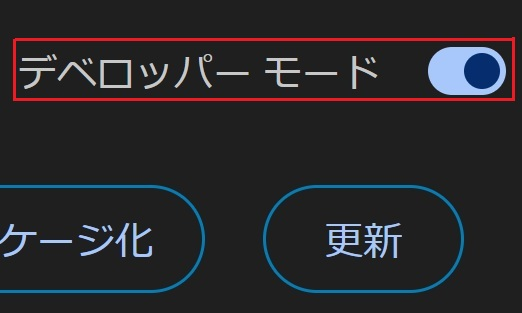
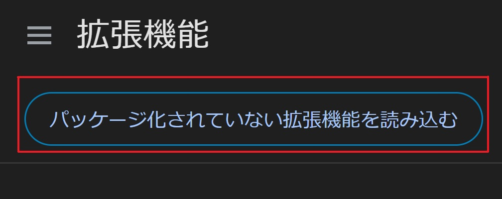

全体の流れ
やることは、4ステップだけ
Claude Code
プランモードで伝える
Claude Code
実装してもらう
Chrome
拡張機能として読み込む
STEP 0 Claude Codeをまだ入れていない方へ（すでにお持ちの方は読み飛ばしてOK） ▾
Claude Codeは、Anthropic公式が配っているインストールコマンドで入れられます。お使いのOSに合わせて、どちらか1行をターミナルに貼り付けてください。インストール後、初めて「claude」と打って起動したときにブラウザが開き、ログインを求められます。案内に沿って進めばOKです。
Mac・Windowsどちらも対応無料でインストールできる初回起動時はブラウザでログイン使うにはPro以上のプラン登録が必要
Macの場合（ターミナル）▾
curl -fsSL https://claude.ai/install.sh | bash
Windowsの場合（PowerShell）▾
irm https://claude.ai/install.ps1 | iex
1
STEP 1 ／ Claude Code
プランモードで、作りたい機能を伝える
Claude Codeを起動したらプランモードに切り替え、どんな拡張機能を作りたいかを日本語で伝えます。設計だけ先に固めるので、いきなり変な実装が始まる心配がありません。

画面下の「plan mode on」がプランモードのサイン
伝える内容の例▾
Chrome拡張機能を作りたいです。 【拡張機能でやりたいこと】 Instagramのプロフィールページを開いたときに、 フォロワー数・投稿数・エンゲージメント率の目安を ポップアップで自動的に表示する 【使う人】 自分のInstagram運用の分析に使う（個人利用） 【できれば欲しい機能】 ・数値をワンクリックでコピーできる ・直近の投稿からいいね数の平均も表示する まず設計を教えてください。実装はそのあとで大丈夫です。
2
STEP 2 ／ Claude Code
「実装して」と伝えて、コードを作ってもらう
設計に納得できたら「実装して」と伝えるだけです。Claude Codeが拡張機能に必要なファイル一式を作ってくれます。
ファイル構成もすべて自動生成動かなければ「直して」でOK何度でも作り直せる
3
STEP 3 ／ Chrome
chrome://extensions を開いて読み込む
Google Chromeのアドレスバーに chrome://extensions と入力し、右上の「デベロッパーモード」をONにします。
設定は数タップで完了一度ONにすれば次回から不要

この「デベロッパーモード」をON
4
STEP 4 ／ Chrome
「パッケージ化されていない拡張機能を読み込む」で完成
「パッケージ化されていない拡張機能を読み込む」を選び、Claude Codeが作ったフォルダを指定すれば、その場で拡張機能が使えるようになります。
フォルダを選ぶだけ即座に使い始められる

このボタンからフォルダを選ぶ
個人情報を扱う拡張機能は、公開前に見直しを。
他人のデータや個人情報を扱う拡張機能を作る場合は、取得・保存の範囲を必ず確認してから使ってください。
他人のデータや個人情報を扱う拡張機能を作る場合は、取得・保存の範囲を必ず確認してから使ってください。
Chromeウェブストアへの公開には別の審査があります。
自分だけで使う分には今回の手順で十分ですが、不特定多数に配布したい場合はChromeウェブストアの公開審査が別途必要です。
自分だけで使う分には今回の手順で十分ですが、不特定多数に配布したい場合はChromeウェブストアの公開審査が別途必要です。
よくある質問
気になるところ
Qエンジニアじゃなくても本当に作れますか
はい。今回の手順は「日本語で伝えて、実装してもらって、読み込む」だけです。コードを書く必要はありません。
Q複雑な拡張機能も作れますか
作れる範囲は広いですが、最初はシンプルな機能から試して、慣れてきたら要望を足していくのがおすすめです。
Q失敗したらどうすればいいですか
動かない場合は「エラーが出ています。直してください」とそのまま伝えれば、Claude Codeが原因を調べて修正してくれます。